SVUnit uses a hierarchical structure of testrunner, test suite and unit test templates with scripting to handle construction and simulation. The upper layer testrunner and test suite(s) are generated and connected automatically with no intervention required. This allows users to focus on writing unit tests within a script generated unit test template.
The most basic SVUnit arrangement includes a single unit test template with 1 or more unit tests against a single UUT.
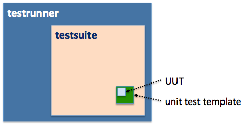
A more likely arrangement is to have several unit test templates in a single directory, each containing unit tests for one of several UUTs. As examples, a design engineer building a subsystem with N modules would have N unit test templates running within a single test suite. Likewise, a verification engineer building a testbench with N transactors would also have N unit test templates running within a single test suite.
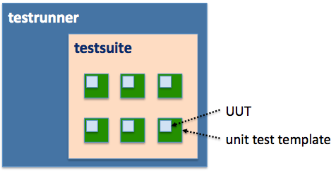
A final, large scale arrangement is one with a test suite for each of M subsystems where each subsystem contains any number of unit test templates and the unit test templates for each subsystem are located in different directories.
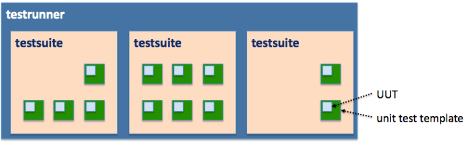
Hierarchy is derived from file/directory structure where all unit test templates located within the same directory are grouped into a test suite.
Download to setup is about a 3 minute procedure…
New unit test templates are created using create_unit_test.pl. Usage of create_unit_test.pl is as follows…
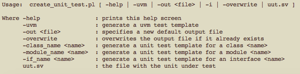
A template can be generated by using any of the -class_name, -module_name, -if_name switches or by specifying a verilog file that contains a definition of the UUT. For example, you can generate a new unit test template for a class called ‘foo’ with:
> create_unit_test.pl -class_name foo
Likewise, if you already have a definition for class ‘foo’ in ‘foo.v’, you can generate a corresponding unit test template with:
> create_unit_test.pl foo.v
The default output for create_unit_test.pl is written to ./<name>_unit_test.sv. The default can be overridden, however, using the -out <file> switch. A different file name and/or directory can be specified as required. The file name, however, must follow the <name>_unit_test.sv format.
Existing files will not be overwritten unless the -overwrite switch is used.
The template generated by create_unit_test.pl includes an instance of the UUT as well as other important parts of the infrastructure. The UUT does not, however, include any pin level connectivity so connectivity is handled by users. For example, if a template is created for a module named ‘test_module’, an instance of ‘test_module’ is created as:
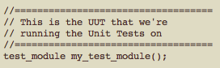
If test_module has two outputs, oBus and oPin, and one input, iPin, a user connects them as normal Verilog IO thereby making them accessible within the unit test template.
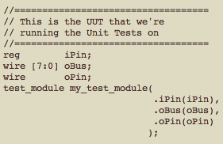
The unit test template includes embedded instructions on structure and position of unit tests:
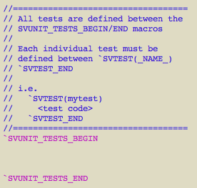
Multiple unit tests can be defined in a unit test template. All must be defined between the `SVUNIT_TESTS_BEGIN and `SVUNIT_TESTS_END macros. Individual unit tests are defined using the `SVTEST(<name>) and `SVTEST_END macros. The test <name> must be a valid verilog code block label (i.e. any alphanumeric starting with [_a-zA-Z]). For example, a template with 2 tests called test0 and test1 would be declared as:
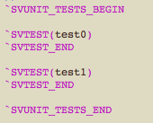
The macros expand to a Verilog code block so any code that is legal within a code block can be used within a unit test. Other required variables, declarations, functions, tasks, etc must be defined outside the BEGIN/END macros. For example, the function helper() can be defined and used within a unit test as:
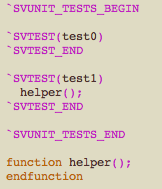
SVUnit imposes no limit on the number of unit tests that can be defined with a unit test template.
SVUnit includes an integrated reporting mechanism such that the exit PASS/FAIL status of every unit test is collected, reported and used to report a cumulative result. To set PASS/FAIL status, SVUnit defines several logging macros that are integrated with the reporting structure.
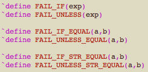
The most commonly used macros are `FAIL_IF and `FAIL_UNLESS that take a single boolean expression as input. The `FAIL_IF_EQUAL and `FAIL_UNLESS_EQUAL macros exit based on an ‘===’ comparison of boolean inputs a and b. Likewise, `FAIL_IF_STR_EQUAL and `FAIL_UNLESS_STR_EQUAL do a string comparison between inputs a and b.
The reporting macros can be used to verify outputs and response of a UUT and set test exit status according. For example, we can use the `FAIL_IF and `FAIL_UNLESS_EQUAL macros to verify oBus and oPin are driven to the proper state.
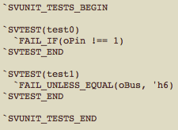
If the conditions described by the macros in either test0 or test1 are not satisfied, the test fails with an assert error and is reported as having failed. Tests are killed immediately at first failure so any code appearing after the failing assert statement does not execute.
Tests can interact with the UUT using simple procedural assignments to inputs or through helper functions and tasks for more complex interactions. For example, if the state of the oPin and oBus outputs is conditional based on the state of the iPin, oPin and oBus can be verified by driving iPin as necessary:
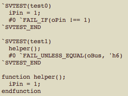
NOTE: the addition of the #0 assumes oPin and oBus are asynchronous outputs that require a delta cycle be consumed before they reach their intended state.
For behaviour that is repeated before and after every test, the setup() and teardown() tasks in the unit test template are intended to group any logic that is repeated before and/or after every test – the setup() task is run before every test and the teardown() task is run after every test. For example, if the default state of iPin is logic 1, that assignment can be done in the setup task rather than each individual test:
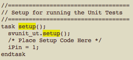
As a result of moving the ‘iPin = 1’ assignment to the setup() task, test0 and test1 can be simplified to:
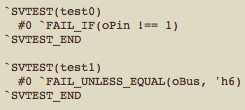
It is recommended that common initialization code be contained in the setup() task. Reset sequence or register initialization, for example, is common logic that should be included in the setup() task. As well, it is recommended that any general cleanup of the UUT or unit test harness be grouped in the teardown() task to avoid polluting the state space for subsequent tests (i.e teardown() is for “cleaning the slate”).
UVM components require additional infrastructure found in the svunit_uvm_mock_pkg. An additional switch, therefore, is included with create_unit_test.pl to generate a UVM component specific test case template. If, for example, class blah is derived from uvm_component, create_unit_test.pl would be invoked as…
> create_unit_test.pl -uvm -class_name blah
The UVM component test case template includes a UUT wrapper that can be used to instantiate any additional unit test infrastructure, like connections to TLM FIFOs or analysis ports, if required. The UUT wrapper in the test case template is output as…
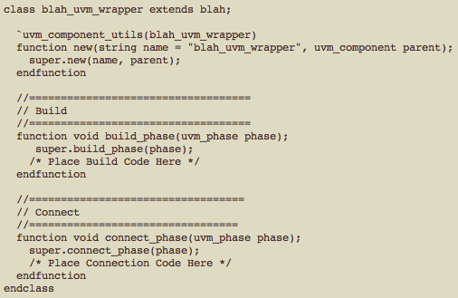
The template also includes calls to functions svunit_activate_uvm_component, svunit_deactivate_uvm_component, svunit_uvm_test_start and svunit_uvm_test_finish in the build, setup and teardown tasks to integrate the UVM runflow with the sequential test running behaviour of SVUnit.
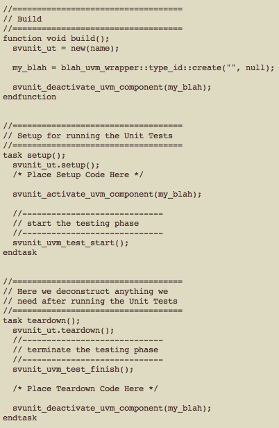
The activate/deactivate functions are used to isolate the component in the uvm_domain such that multiple uvm_components can be tested in series. The start/finish functions are used to invoke phase jumping such that unit tests against against a component can be run iteratively.
SVUnit unit tests are run using runSVUnit. Usage of runSVUnit is as follows…
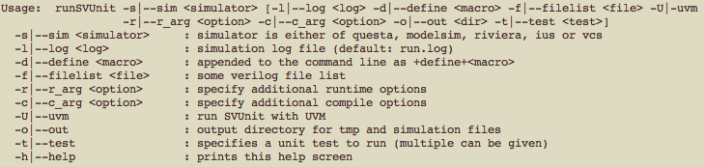
SVUnit can be run using most commonly used EDA simulators using the ‘-s’ switch. Supported simulators currently include Mentor Graphics Questa, Cadence Incisive, Synopsys VCS and Aldec Riviera PRO.
By default, simulation output is written to run.log. The default location can be overridden using the ‘-l’ switch.
SVUnit will pass command line macro defines specified by the ‘-d’ switch directly to the simulator.
Through the use of `include directives, both the unit test template and corresponding UUT file are included in compilation making it possible to build and verify on simple designs without any need to specify or maintain file lists. As designs grow, however, more files can be added using standard simulator file lists and the ‘-f’ switch.
NOTE: The file svunit.f is automatically included for compilation provided it exists. Thus, files can be added to svunit.f without having to specify ‘-f svunit.f’ on the command line.
It is possible to specified compile and run time options using the ‘-c_arg’ and ‘-r_arg’ switches respectively. All compile and run time arguments are passed directly to the simulator command line.
For verification engineers unit testing UVM-based components, the ‘-U’ switch must be specified to include relevant run-flow handling.
By default, SVUnit is run in the current working directory. However, to avoid mixing source files with simulation output, it is possible to change the location where SVUnit is built and simulated using the ‘-o’ switch. It is an error to use the ‘-o’ switch to runSVUnit that doesn’t exist.
By default, runSVUnit finds and simulates all unit test templates within a given parent directory. For short runs, this is recommended practice. However, if simulation times grow to the point where they are long and cumbersome, it is possible to specify specific unit test templates to be run using the ‘-t’ switch. For example, if a parent directory has 12 unit test templates but you only want to run mine_unit_test.sv, you can use the ‘-t’ switch as:
> runSVunit -t mine_unit_test.sv -s <your simulator>
The ‘-t’ switch can be used to specify multiple unit test templates as:
> runSVunit -t mine_unit_test.sv -t yours_unit_test.sv -s <your simulator>
It's also possible to restrict which individual tests should run. This is done using the ‘--filter’ option.
The following call runs only some_test defined in some_testcase:
> runSVUnit --filter some_testcase.some_test
The following call runs all tests called some_test regardless of which testcase they are defined in:
> runSVUnit --filter *.some_test
The following call runs all tests defined in some_testcase:
> runSVUnit --filter some_testcase.*
The previous command is conceptually similar to using the ‘-t’ option. While the runtime behavior is the same, it is slightly different in terms of what gets compiled. Using ‘-t’ selects what gets compiled and by extension limits what can be run. Using ‘--filter’ only affects which of the tests that were compiled should run, but doesn't control what gets compiled. Both options are useful, as they serve different purposes. The ‘-t’ option is helpful when API changes would require modifications to many unit test files, but you would like to update them one after the other. It is also a very blunt tool, as compilation can only be handled at the file level. The ‘--filter’ option can be used to focus on finer subsets of tests.
Using built-in logging macros, the logged SVUnit output shows step-by-step run status for each test, unit test template and test suite as well as a cumulative result for the testrunner.
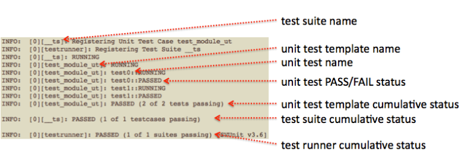
To connect with other users, ask questions and share experience, join the SVUnit User Group. Everyone is welcome!
It’d be a big help for me to get your feedback and direction so I can make sure the user guide is actually helping SVUnit users. Please let me know what you think!